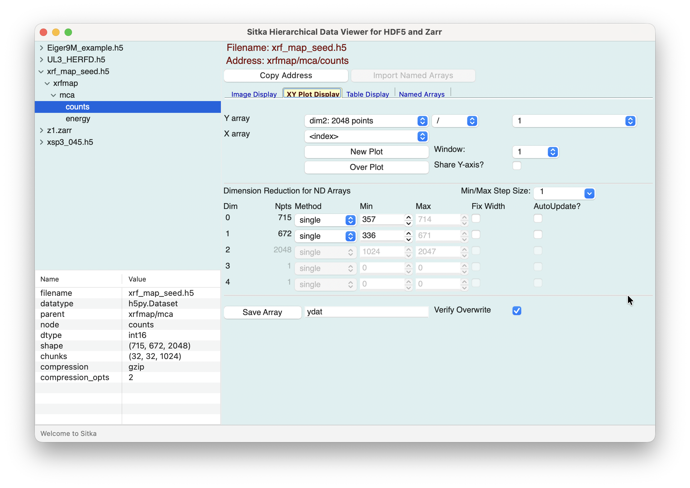
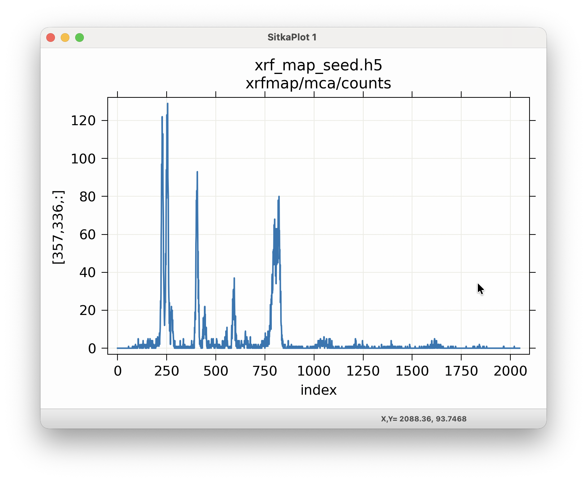

The XY Plot Display Page¶
The XY Plot Display page will look like
{kind=link}

and allow you make images or false-color maps of the multi-dimensional data.
In the top Array Selection section, you can select the dimension for Y Array data.
The choices for dimensions and number of points will be automatically updated for each dataset, following the shape values (shown in the Info section).
For data arrays that have 2- or more dimensions, changing the selections for the Y Array will automatically change how the contents of the Dimension Reduction is presented. See The Dimension Reduction Panel for information about how you can use this.
If you have named 1-D arrays of the same length as the Y array data, these will be included in the drop-down lists for the “Normalization Array” and the “X Array”. The Normalization Array (defaulting to the constant “1”) can be used to multiply, divide, add, or subtract from the selected Y array. The choice for the X Array will be used for the X-axis of the plot, defaulting to the array index.
{kind=link}

To show the plot for your selected arrays, you can either use “New Plot” to show in a new plot window (and you can select up to 10 of these), or you can use “Over Plot” to plot with the existing XY Plot. The checkbox for “Share Y axis” will control whether the Y-scale for multiple plot traces should be shared or independent.
As with the image displays, thes plots are fully interactive, and allowing zooming, panning. The plots can be configured and can be copied to the system clipboard with Ctrl-C. A wide selection of color themes are available, and colors, linetypes, text, and sizes for most elements can be changed after displayed. For more details using this image display, see WXMPLOT Interactive Plot Display